Batch B11 — Bay ducting (PETG V0)¶
One page per step
Read this chapter one step per page — big pictures, prev/next, and the same tick marks. This page is the whole chapter in one scroll.
Time: 25.0 h (5 plates) — PrusaSlicer 2.9.6 estimates: 11.9 h before kit (B11-P1 to P3, 173 g), 13.1 h after the kit-day measurements (B11-P4 and B11-P5, 175 g). 348 g of Jet Black PETG V0 in all. Not part of the 157.0 h ASA run, and none of its numbers are in the run's totals.
Sessions: 5 plate starts (~5 min hands-on each, all day plates), ~10 min for the coupon test, ~15 min to inspect and bin; ~35 min of bay measuring on kit day, before P4 and P5, and ~15 min for the A/B lead check after Checkpoint 06.
Prerequisites: nothing from the ASA run. No part here holds a bearing or takes a press fit, so neither Gate A nor Gate B applies. Needs one 1 kg spool of Prusament PETG V0 Jet Black (not yet bought) and the textured sheet. P4 and P5 print right after kit day, as soon as the kit-day bay measurements (B11.10, B11.11) are done, and must be binned before Ch 09 Step 09.6 lays the DC loop. The A/B motor-lead check (B11.9) does not gate them: it needs the gantry hung, so it runs after Checkpoint 06, and a short lead gets a longer replacement before Ch 10. Layout v3 stands either way.
What this batch builds. Layout v3 replaces LDO's five PVC wire ducts in the electronics bay with two printed conduits, made from MyStoopidStuff's remix of RyanDam's Cable Management Duct. The DC conduit is one loop: curved 90° corners, two T-junctions, a 45° S-jog up to the Z-chain notch, and a middle run narrowed to 22 mm so it fits between the Leviathan and the PSU. The AC conduit is MSS's wire box at its original size by the WAGO bus, two re-radiused 90° curves down to a 34 mm run over the bed-lead hole, a T behind the SSR, and a divider fin at the PSU terminals. The closest AC-to-DC approach is 12.0 mm on the layout (verify on bench). Fitting them is Ch 09's and Ch 10's job; this page only prints them. Design record: review/2026-09-23-bay-mods/layout-v3/layout-v3.md.
Printed parts
Every part is Jet Black PETG V0 ("Black" below). g ea is each piece sliced alone with slicer/bay-ducts-petg.ini, purge line included, so the column does not sum to a plate line. Repo paths are under slicer/stl/bayducts/: mss/502306/ is MSS's stock file from Printables 502306, fetched by slicer/fetch_stls.py; remix/ is remixed for the LDO Rev D+ bay in this repo. All GPL-3.0; credit and licence in slicer/stl/bayducts/README.md.
| STL | Repo path | Qty | Colour | g ea | Bin |
|---|---|---|---|---|---|
V3L_COUPON_22N_DUCT.stl |
bayducts remix/ · before kit |
1 | Black | 3.0 | 09-ducts |
V3L_COUPON_22N_DUCT_COVER.stl |
bayducts remix/ · before kit |
1 | Black | 1.1 | 09-ducts |
CMD_V3_1H_154mm_DUCT.stl |
bayducts mss/502306/ · before kit |
2 | Black | 21.0 | 09-ducts |
CMD_V2_6B_154mm_DUCT_COVER.stl |
bayducts mss/502306/ · before kit |
2 | Black | 8.1 | 09-ducts |
CMD_V3_1H_90DEG.stl |
bayducts mss/502306/ · before kit |
2 | Black | 9.2 | 09-ducts |
CMD_V2_6B_90DEG_COVER.stl |
bayducts mss/502306/ · before kit |
2 | Black | 3.7 | 09-ducts |
V2L_90DEG_MIRROR.stl |
bayducts remix/ · before kit |
1 | Black | 9.2 | 09-ducts |
V2L_90DEG_COVER_MIRROR.stl |
bayducts remix/ · before kit |
1 | Black | 3.7 | 09-ducts |
CMD_Remix-V3_DUCT-2B_45deg.stl |
bayducts mss/502306/ · before kit |
2 | Black | 7.3 | 09-ducts |
CMD_Remix-V3_DUCT-2B_45deg_LID.stl |
bayducts mss/502306/ · before kit |
2 | Black | 2.8 | 09-ducts |
V3L_WIRE_BOX_PORT.stl |
bayducts remix/ · before kit |
1 | Black | 17.7 | 09-ducts |
CMD_V2_6B_WIRE_BOX_COVER.stl |
bayducts mss/502306/ · before kit |
1 | Black | 7.4 | 09-ducts |
V3L_90DEG_R15.stl |
bayducts remix/ · before kit |
2 | Black | 2.8 | 09-ducts |
V3L_90DEG_R15_COVER.stl |
bayducts remix/ · before kit |
2 | Black | 1.3 | 09-ducts |
CMD_V3_1H_T_SHORT.stl |
bayducts mss/502306/ · before kit |
1 | Black | 9.0 | 09-ducts |
CMD_V2_6B_T_SHORT_COVER.stl |
bayducts mss/502306/ · before kit |
1 | Black | 3.7 | 09-ducts |
CMD_Remix-V3_DUCT-1M_ENDCAP.stl |
bayducts mss/502306/ · before kit |
2 | Black | 1.4 | 09-ducts |
V2L_STRIP_FIN.stl |
bayducts remix/ · before kit |
1 | Black | 5.0 | 10-wiring |
V2L_58mm_DUCT.stl |
bayducts remix/ · after kit |
3 | Black | 7.9 | 09-ducts |
V2L_58mm_DUCT_COVER.stl |
bayducts remix/ · after kit |
3 | Black | 3.1 | 09-ducts |
V2L_130mm_DUCT.stl |
bayducts remix/ · after kit |
1 | Black | 17.8 | 09-ducts |
V2L_130mm_DUCT_COVER.stl |
bayducts remix/ · after kit |
1 | Black | 6.9 | 09-ducts |
V2L_70mm_DUCT.stl |
bayducts remix/ · after kit |
1 | Black | 9.6 | 09-ducts |
V2L_70mm_DUCT_COVER.stl |
bayducts remix/ · after kit |
1 | Black | 3.7 | 09-ducts |
V3L_10mm_DUCT.stl |
bayducts remix/ · after kit |
3 | Black | 1.5 | 09-ducts |
V3L_10mm_DUCT_COVER.stl |
bayducts remix/ · after kit |
3 | Black | 0.6 | 09-ducts |
V3L_34mm_DUCT_HOLE.stl |
bayducts remix/ · after kit |
1 | Black | 4.1 | 09-ducts |
V3L_34mm_DUCT_COVER.stl |
bayducts remix/ · after kit |
1 | Black | 1.8 | 09-ducts |
V3L_154N_DUCT.stl |
bayducts remix/ · after kit, if gap ≥ 25 mm |
2 | Black | 20.3 | 09-ducts |
V3L_154N_DUCT_COVER.stl |
bayducts remix/ · after kit, if gap ≥ 25 mm |
2 | Black | 7.5 | 09-ducts |
V3L_T_REG_N.stl |
bayducts remix/ · after kit, if gap ≥ 25 mm |
2 | Black | 13.5 | 09-ducts |
V3L_T_REG_N_COVER.stl |
bayducts remix/ · after kit, if gap ≥ 25 mm |
2 | Black | 5.4 | 09-ducts |
{kind=link}
Layout v3 drawn on LDO's Rev D placement photo, front of the printer at the top. Apparent millimetres, ±6 % absolute and ±1.5 mm on local gaps: every position is (verify on bench). Photo: LDO Motors; drawing: this repo.
Which piece goes where: the two stock 154s are the front run; the three corners are front-left (the mirrored one), front-right and rear-right; the 45° pair is the S-jog; the 58s are L1, R1 and rear-lower, the 130 is L2, the 70 is R2; the three 10 mm pieces are the DC rear-upper run, the SSR run's right end and the stub up into the wire box's port. Positions and clearances: review/2026-09-23-bay-mods/layout-v3/layout-v3.md.
Options, not plated:
- Orange endcaps. The two
CMD_Remix-V3_DUCT-1M_ENDCAPcan be printed in the spare Prusament ASA Prusa Orange instead, as a visual mark on the AC conduit's ends. Load the STL on its own withslicer/voron-coreone-asa.iniand the smooth sheet. No plate, no ledger line; the black pair on B11-P3 is the default. - WARNING lid. MSS's lettered
CMD_Remix-V3_DUCT-1V_WIRE_BOX_LID_WARNING+ inlay (Printables 505838) is a two-colour body and waits for the INDX. B11 prints the plainCMD_V2_6B_WIRE_BOX_COVER. - Fallback middle run. If the Leviathan-to-PSU gap measures under 25 mm, skip B11-P5 and print stock
CMD_V3_1H_T_REG+ cover in place of eachV3L_T_REG_N, plus oneCMD_V3_1H_82mm_DUCT+ cover, and keep LDO's PVC middle duct. Those four files are vendored inmss/502306/but on no plate.
Hardware: none to print. Mounting hardware and tape belong to Ch 09.
Read first
- Not Voron spec. The ducts carry no load, so B11 has its own bundle,
slicer/bay-ducts-petg.ini: system filamentPrusament PETG V0 @COREONE HF0.4, 0.20 mm layers, 3 perimeters, 4 top and 4 bottom, 20 % grid infill, no supports. Printer settings and the cold start G-code are the ASA run's. Grid, not gyroid: gyroid infill curls with PETG on this printer. Every key:slicer/OVERRIDES.md§ Bay-duct bundle. - Textured sheet. Prusa does not recommend PETG V0 on smooth PEI: it bonds hard enough to damage the sheet, and that damage is not covered by warranty. Swap back to the smooth sheet before the next ASA plate.
- AFS flaps. The bundle's filament start G-code sends
M106 P3 S160and its end G-codeM106 P3 R, so the bypass flaps lift for PETG with Chamber Filtration left on Adv. Filtration. Print from Connect or USB, not OctoPrint: the fixed P3 target makesM141log an error OctoPrint would halt on. - Arrangement provisional, GUI QC pending. All five plates were packed by
slicer/nest.pyat a 6 mm gap and sliced from the CLI; none has been opened, arranged and re-saved in PrusaSlicer yet. Before each first print: Arrange Current Bed (6 mm, rotations on), save overslicer/plates/B11-Pn.3mf, thenpython3 slicer/build_plates.py --from-3mf B11-Pnandpython3 slicer/check_docs.py. - Two groups. P1 to P3 need nothing measured and can print whenever the printer is free. P4 holds the custom lengths and P5 the narrowed middle run; both wait for the kit-day bay measurements, and P5 also waits for the coupon test. The A/B lead check after Checkpoint 06 only decides whether a longer replacement lead is needed.
- Every part is Jet Black. Nothing here is dimension-critical beyond the lid snap, which the coupon tests.
Before kit¶
Step B11.1 — Filament and sheet prep¶
Do: Load the Prusament PETG V0 Jet Black spool, V1 in the ledger. A fresh sealed spool goes straight in; an opened one dries at 55 °C for 6 h. Fit the textured sheet.
Check
Textured sheet on, clean purge, and at least 348 g on the spool for the whole batch.
Sheet
Prusa does not recommend PETG V0 on smooth PEI. It can bond hard enough to tear the coating, and the damage is not covered by warranty. Keep the smooth sheet for ASA. src
Source: print/README § B11 spool ledger · Prusament PETG V0 Jet Black · Prusa KB — PETG
Step B11.2 — Pre-print checks¶
Do: Door closed, Chamber Filtration left on Adv. Filtration. Watch the rear bypass flaps once the plate starts.
Check
The flaps lift within the first minutes and the chamber settles near 35 °C (verify on bench).
Tip
If the flaps stay shut, set Chamber Filtration to None by hand for this plate; the chamber fans then lift them. Set Adv. Filtration again when it ends.
Source: slicer/OVERRIDES.md § Bay-duct bundle · Prusa KB — PETG
Step B11.3 — Load and print plate B11-P1¶
{kind=link}
Sorting diagram, drawn from the committed project: every part numbered and filled in the colour of its bin, bin id on the part; the legend reads # · STL · bin (chapter · steps). Sort at Step B11.8.
Do: Open slicer/plates/B11-P1.3mf with File → Open Project and print it on its own, first. It is the lid-snap test for the narrowed middle run.
Parts: V3L_COUPON_22N_DUCT · V3L_COUPON_22N_DUCT_COVER · 2 files, 2 objects — 0.4 h, 4 g (PrusaSlicer 2.9.6 estimate) · no brim.
Check
Preview shows the bay-ducts PETG V0 bundle, the duct base down and the lid flat, no supports.
GUI QC pending
this arrangement came from nest.py. Before the first print, run Arrange Current Bed, save over the 3MF, then build_plates.py --from-3mf B11-P1 and check_docs.py.
Tip
Paused or stopped mid-plate? See When the printer stops.
Good stopping point · ~5 min since the last one
the coupon is printing, 25 min, textured sheet on.
Source: print/README § B11 · 00-slicer-setup § Committed projects · review/2026-09-23-bay-mods/layout-v3/layout-v3.md § Middle run
Step B11.4 — Test the coupon's lid snap¶
{kind=link}
What you're looking at: The coupon is a 22 mm slice of the narrowed middle run. Its walls, tines and lid rail are the stock geometry; only the floor and lid are 2.4 mm narrower.
Do: Snap the lid on and off five times, then shake the coupon lid down.
Check
The lid clicks home each time and stays on when shaken. Any crack or loose lid means no B11-P5.
Good stopping point · ~10 min since the last one
coupon tested and kept in 09-ducts. The bundle-fill test waits for the harness on kit day.
Source: review/2026-09-23-bay-mods/layout-v3/layout-v3.md § Middle run and check 16
Step B11.5 — Load and print plate B11-P2¶
{kind=link}
Sorting diagram, drawn from the committed project: every part numbered and filled in the colour of its bin, bin id on the part; the legend reads # · STL · bin (chapter · steps). Sort at Step B11.8.
Do: Open slicer/plates/B11-P2.3mf with File → Open Project. This is the DC conduit's front run and its three corners.
Parts: CMD_V3_1H_154mm_DUCT ×2 · CMD_V2_6B_154mm_DUCT_COVER ×2 · CMD_V3_1H_90DEG ×2 · CMD_V2_6B_90DEG_COVER ×2 · V2L_90DEG_MIRROR · V2L_90DEG_COVER_MIRROR · 6 files, 10 objects — 6.9 h, 96 g (PrusaSlicer 2.9.6 estimate) · no brim.
Check
Every duct body base down, every lid flat; the two 154 mm ducts lie clear of the bed edge.
Tip
Paused or stopped mid-plate? See When the printer stops.
Good stopping point · ~5 min since the last one
plate B11-P2 running, 6.9 h unattended.
Source: print plan §3 — the batches · MSS duct remix, Printables 502306
Step B11.6 — Load and print plate B11-P3¶
{kind=link}
Sorting diagram, drawn from the committed project: every part numbered and filled in the colour of its bin, bin id on the part; the legend reads # · STL · bin (chapter · steps). Sort at Step B11.8.
Do: Open slicer/plates/B11-P3.3mf with File → Open Project. This is the AC conduit, the strip fin and the DC S-jog.
Parts: V3L_WIRE_BOX_PORT · CMD_V2_6B_WIRE_BOX_COVER · V3L_90DEG_R15 ×2 · V3L_90DEG_R15_COVER ×2 · CMD_V3_1H_T_SHORT · CMD_V2_6B_T_SHORT_COVER · CMD_Remix-V3_DUCT-1M_ENDCAP ×2 · V2L_STRIP_FIN · CMD_Remix-V3_DUCT-2B_45deg ×2 · CMD_Remix-V3_DUCT-2B_45deg_LID ×2 · 10 files, 15 objects — 4.6 h, 73 g (PrusaSlicer 2.9.6 estimate) · no brim.
Check
Endcaps stand on their flat face, the fin lies plate down, every duct body sits base down.
Tip
Paused or stopped mid-plate? See When the printer stops.
Good stopping point · ~5 min since the last one
plate B11-P3 running, 4.6 h unattended.
Source: print plan §3 — the batches · MSS duct remix, Printables 502306
Step B11.7 — Inspect the before-kit plates¶
Do: Snap every lid onto its duct once. Check each tine row for strings and each base for elephant foot.
Check
Every lid seats along its full length; no tine is fused to its neighbour; bases are flat.
Good stopping point · ~10 min since the last one
before-kit parts inspected and bagged by plate.
Source: print plan §5.2 — checkpoint after each batch
Step B11.8 — Sort into bins¶
Do: Sort off the plate diagrams: number to legend, colour to bin, bin id on the part. Mark plate id and date on a hidden face. Labels: bin-labels sheet. Everything goes to 09-ducts except the strip fin, which goes to 10-wiring.
B11-P1
| bin | parts off this plate |
|---|---|
| 09-ducts — Bay ducts and lids, B11 | V3L_COUPON_22N_DUCT, V3L_COUPON_22N_DUCT_COVER |
B11-P2
| bin | parts off this plate |
|---|---|
| 09-ducts — Bay ducts and lids, B11 | CMD_V3_1H_154mm_DUCT ×2, CMD_V2_6B_154mm_DUCT_COVER ×2, CMD_V3_1H_90DEG ×2, CMD_V2_6B_90DEG_COVER ×2, V2L_90DEG_MIRROR, V2L_90DEG_COVER_MIRROR |
B11-P3
| bin | parts off this plate |
|---|---|
| 09-ducts — Bay ducts and lids, B11 | V3L_WIRE_BOX_PORT, CMD_V2_6B_WIRE_BOX_COVER, V3L_90DEG_R15 ×2, V3L_90DEG_R15_COVER ×2, CMD_V3_1H_T_SHORT, CMD_V2_6B_T_SHORT_COVER, CMD_Remix-V3_DUCT-1M_ENDCAP ×2, CMD_Remix-V3_DUCT-2B_45deg ×2, CMD_Remix-V3_DUCT-2B_45deg_LID ×2 |
| 10-wiring — Bay wiring: AC strip fin (B11) | V2L_STRIP_FIN |
Check
26 pieces in 09-ducts and the strip fin alone in 10-wiring, each lid bagged with its duct.
Helper: Reads each bin label aloud and checks the count against the diagram.
Before the next ASA plate
smooth sheet back on, and Settings → Chamber Filtration reads Adv. Filtration. On None the AFS blower never runs and ASA vents unfiltered.
Good stopping point · ~10 min since the last one
the before-kit half of B11 is binned. Swap the smooth sheet back on and set Adv. Filtration if an ASA plate is next.
Source: print/README § Bins · print plan §9 — B11 plates
After the kit-day measurements¶
Step B11.9 — Confirm the A/B motor leads after Checkpoint 06¶
What you're looking at: Layout v3 routes the A and B leads through the notch, right run and middle run: about 195 mm more for A, 129 mm for B, than LDO's route. The leads reach the deck only once the gantry hangs.
Do: After Checkpoint 06, printer upright, gantry low:
- Run each lead along the extrusion between the drives, then down the Z chain's path to the deck notch. Tape-mark it there.
- Measure mark to plug tip, minus B11.10's LDO length.
Check
A has at least 215 mm spare and B at least 150 mm. Either way, print P4 and P5 on schedule.
B11 confirmation — A and B motor lead spare length — the calculator needs JavaScript; the limits are in the table on this page.
If a lead is short
make a longer replacement lead — a 4-pin JST-XH cable, same wire gauge as the stock lead (verify on bench) — rather than dropping back to layout v1; Ch 10 fits it with the motor. P4 and P5 print now regardless.
Tip
The Z chain hangs at the rear from the A drive down to its guide by the deck, as p.201 shows. Hold the kit's chain there and follow it (verify on bench).
Good stopping point · ~15 min since the last one
both leads measured after Checkpoint 06 and logged; leads hang loose again, tape marks off, nothing fastened. A short lead means making a longer replacement before Ch 10; P4 and P5 are unaffected.
Source: review/2026-09-23-bay-mods/layout-v3/layout-v3.md § Clearance and bench checks, check 1 · layout-v2/layout-v2.md § Component shifts · Voron manual p.201 · Ch 10 Step 10.41 · Ch 10 Step 10.42 · Ch 10 Step 10.61
Step B11.10 — Measure the gaps the custom pieces fill¶
Do: Kit day, deck panel loose:
- Dry-lay the rails, PSU, SSR, Leviathan and P2 and P3 pieces per the overlay.
- Caliper the rows below.
- String LDO's duct route from the notch to
HV-STEPPER-1andHV-STEPPER-0; log both.
Check
Every row entered, both string lengths logged. The gap row decides P5, the SSR row the stub, regenerated at B11.11 only from 112 mm.
B11 bay gaps — what P4 and P5 are cut to — the calculator needs JavaScript; the limits are in the table on this page.
Helper: Reads each caliper number back aloud and writes it into the log.
Tip
The bed TH, probe, filter-fan leads and Bed L route in Ch 10; the probe and filter fan aren't built until Ch 09 and Ch 11. Fit confirms then.
Good stopping point · ~20 min since the last one
the bay is dry-laid and measured; nothing is stuck down or fastened.
Source: review/2026-09-23-bay-mods/layout-v3/layout-v3.md § Clearance and bench checks, checks 3, 5, 7 and 16 · layout-v2/layout-v2.md bench check 2 · layout-v3/overlay-v3.jpg
Step B11.11 — Regenerate a piece whose gap differs¶
What you're looking at: Every custom straight is a stock MSS duct with a slab cut out. Lengths come in 12 mm steps, 10, 22, 34 up to 154 mm, because each cut sits on a tine boundary. Only the stub changes with a bench gap.
Do:
- Stub length: the 12 mm step at or below the SSR gap minus 90. Run the recipe only if that is 22 or more.
- Make the three edits in its comments.
- Run its last line.
# once: python3 -m venv ~/.venv-remix && ~/.venv-remix/bin/pip install trimesh manifold3d numpy
# the MSS parents are gitignored: run python3 slicer/fetch_stls.py first if slicer/stl/bayducts/mss/502306/ is empty
# L = new length, 22, 34, 46 … (10 + 12n). P = parent: 82 for L up to 70, 142 up to 130, else 154.
REPO=$PWD L=22 P=82
S=$(mktemp -d); mkdir -p $S/mods/layout-v2 $S/mods/layout-v3/remix
ln -s "$REPO/slicer/stl/bayducts/mss/502306" $S/mods/502306-cable-duct
ln -s "$REPO/review/2026-09-23-bay-mods/layout-v2/remix" $S/mods/layout-v2/remix
cd review/2026-09-23-bay-mods/layout-v3/work
# importing remix_v3 re-runs all of layout v3 into $S first, and its listing prints before the new piece exists
BAY_MODS_SCRATCH=$S L=$L P=$P ~/.venv-remix/bin/python -c "
import os, trimesh, remix_v3 as r; L, P = int(os.environ['L']), int(os.environ['P'])
assert L % 12 == 10 and 22 <= L < P, 'L must be 22, 34, 46 ... and shorter than the parent P'
for part, new in (('CMD_V3_1H_%dmm_DUCT', 'V3L_%dmm_DUCT'), ('CMD_V2_6B_%dmm_DUCT_COVER', 'V3L_%dmm_DUCT_COVER')):
r.save(r.shorten(r.D + part % P + '.stl', P - L, 11.0), new % L + '.stl')
m = trimesh.load(r.OUT + new % L + '.stl'); print('NEW', new % L, m.extents.round(1), 'watertight' if m.is_watertight else 'OPEN')"
cp $S/mods/layout-v3/remix/V3L_${L}mm_DUCT*.stl "$REPO/slicer/stl/bayducts/remix/"
cd "$REPO"
# edit 1, slicer/plates.py B11-P4: V3L_10mm_DUCT and V3L_10mm_DUCT_COVER 3 -> 2, add V3L_${L}mm_DUCT and _COVER x1.
# The other two 10 mm pieces keep their roles; never rename the 10 mm line.
# edit 2, slicer/plates.py ORIENT: add "V3L_${L}mm_DUCT.stl" to the "flip" list. The duct is drawn base up, as
# remix_v3 leaves every body, and flip prints it base down. The cover needs no entry.
# edit 3, slicer/bins.py: ASSIGN both new names -> "09-ducts"; NOTES: the 10 mm line becomes "2 copies: DC rear-upper
# run, SSR run right end", and "V3L_${L}mm_DUCT.stl": "stub into the box port".
python3 slicer/fetch_stls.py && python3 slicer/build_plates.py --nest B11-P4 && python3 slicer/check_docs.py
Check
Both NEW lines say watertight, B11-P4 slices with the new duct base down, and check_docs.py passes once the B11 figures it names are updated.
Tip
If B11.10's psu row also failed, the SSR run's right-end 10 mm piece comes off P4 too: one fewer on the 10 mm line.
Good stopping point · ~15 min since the last one
every piece that needed it is regenerated, back on B11-P4 and re-sliced; check_docs.py is green.
Source: review/2026-09-23-bay-mods/layout-v3/work/remix_v3.py · layout-v2/work/remix.py · slicer/stl/bayducts/README.md
Step B11.12 — Load and print plate B11-P4¶
{kind=link}
Sorting diagram, drawn from the committed project: every part numbered and filled in the colour of its bin, bin id on the part; the legend reads # · STL · bin (chapter · steps). Sort at Step B11.14.
Do: Open slicer/plates/B11-P4.3mf with File → Open Project, after any regenerated piece is back on the plate. These are the custom lengths.
Parts: V2L_58mm_DUCT ×3 · V2L_58mm_DUCT_COVER ×3 · V2L_130mm_DUCT · V2L_130mm_DUCT_COVER · V2L_70mm_DUCT · V2L_70mm_DUCT_COVER · V3L_10mm_DUCT ×3 · V3L_10mm_DUCT_COVER ×3 · V3L_34mm_DUCT_HOLE · V3L_34mm_DUCT_COVER · 10 files, 18 objects — 6.3 h, 82 g (PrusaSlicer 2.9.6 estimate) · no brim.
Check
The plate holds the lengths the bay measured, and the 34 mm piece shows its floor opening.
Tip
Paused or stopped mid-plate? See When the printer stops.
Good stopping point · ~5 min since the last one
plate B11-P4 running, 6.3 h unattended.
Source: print plan §3 — the batches · review/2026-09-23-bay-mods/layout-v3/layout-v3.md
Step B11.13 — Load and print plate B11-P5¶
{kind=link}
Sorting diagram, drawn from the committed project: every part numbered and filled in the colour of its bin, bin id on the part; the legend reads # · STL · bin (chapter · steps). Sort at Step B11.14.
Do: Print this plate only if the coupon passed and the gap measured 25 mm or more. Otherwise print the fallback listed under Options instead.
Parts: V3L_154N_DUCT ×2 · V3L_154N_DUCT_COVER ×2 · V3L_T_REG_N ×2 · V3L_T_REG_N_COVER ×2 · 4 files, 8 objects — 6.8 h, 93 g (PrusaSlicer 2.9.6 estimate) · no brim.
Check
Both narrowed 154s and both narrowed Ts base down, lids flat.
Fallback
stock CMD_V3_1H_T_REG and CMD_V3_1H_82mm_DUCT are drawn base up. Load them with slicer/bay-ducts-petg.ini, place each on its wide flat base, and print their covers as they come.
Tip
Paused or stopped mid-plate? See When the printer stops.
Good stopping point · ~5 min since the last one
plate B11-P5 or the fallback running.
Source: review/2026-09-23-bay-mods/layout-v3/layout-v3.md § Middle run · print plan §3 — the batches
Step B11.14 — Sort the after-kit plates into bins¶
Do: Snap each lid on once, then sort off the diagrams into 09-ducts, beside the before-kit pieces.
B11-P4
| bin | parts off this plate |
|---|---|
| 09-ducts — Bay ducts and lids, B11 | V2L_58mm_DUCT ×3, V2L_58mm_DUCT_COVER ×3, V2L_130mm_DUCT, V2L_130mm_DUCT_COVER, V2L_70mm_DUCT, V2L_70mm_DUCT_COVER, V3L_10mm_DUCT ×3, V3L_10mm_DUCT_COVER ×3, V3L_34mm_DUCT_HOLE, V3L_34mm_DUCT_COVER |
B11-P5
| bin | parts off this plate |
|---|---|
| 09-ducts — Bay ducts and lids, B11 | V3L_154N_DUCT ×2, V3L_154N_DUCT_COVER ×2, V3L_T_REG_N ×2, V3L_T_REG_N_COVER ×2 |
Check
26 more pieces in 09-ducts, or the fallback set in place of P5's eight.
Helper: Reads each bin label aloud and checks the count against the diagram.
Before the next ASA plate
smooth sheet back on, and Settings → Chamber Filtration reads Adv. Filtration. On None the AFS blower never runs and ASA vents unfiltered.
Good stopping point · ~10 min since the last one
all of B11 is binned for Ch 09. Smooth sheet back on, Chamber Filtration on Adv. Filtration.
Source: print/README § Bins
Checkpoint B11¶
- Coupon lid snaps home and holds, tested before B11-P5
- A/B leads confirmed after Checkpoint 06; a longer replacement lead made before Ch 10 if either was short
- Leviathan-to-PSU gap measured: B11-P5 printed, or the fallback with LDO's PVC middle duct
- SSR-to-WAGO measured; the stub regenerated at B11.11 if the gap was 112 mm or more
- TH, probe, filter-fan and bed L leads confirmed against layout v3 in Ch 09/10, not on kit day
- Every lid snaps onto its duct; 09-ducts holds the ducts, 10-wiring the strip fin
- Smooth sheet back on the printer and Chamber Filtration on Adv. Filtration for any ASA plate
- GUI QC done on all five plates and
check_docs.pygreen after the re-saves

Common mistakes¶
- Printing PETG V0 on the smooth sheet. It can tear the coating; use the textured sheet.
- Printing B11-P5 before the coupon test and the gap measurement. Both can send it to the fallback.
- Slicing a regenerated piece with the ASA bundle. B11 uses
slicer/bay-ducts-petg.inionly. - Leaving Adv. Filtration to hold the flaps shut on a PETG plate printed without the B11 bundle.
- Starting the next ASA plate with Chamber Filtration still on None. The AFS blower never runs, so the styrene goes into the room.
Next¶
Ch 09 fits the conduits in place of LDO's PVC ducts, in its bay-ducting variant; Ch 10 lays the harness in them and fits the strip fin as it closes the AC lids.